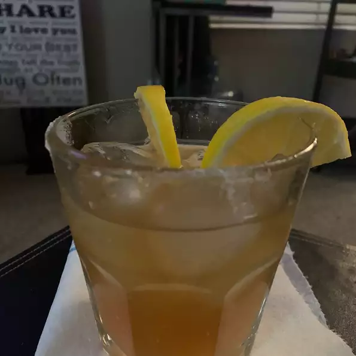

Sidecar

Description
sidecar is brandy margarita, except that it is made with fresh lemon juice.
Ingredients
- ice cubes
- ½ fluid ounce freshly squeezed lemon juice
- ½ fluid ounce Cointreau or triple sec
- 1 fluid ounce brandy
- 1 lemon wedge
Steps
- Fill a cocktail shaker 3/4 full with ice cubes.
- Pour in lemon juice, Cointreau, and brandy.
- Cover and shake vigorously for about 30 seconds until the outside of the shaker becomes cold and frosty.
- Strain into a martini glass and garnish with a wedge of lemon.